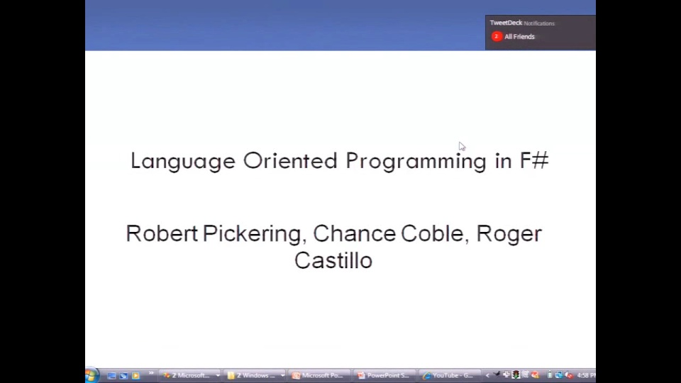

Series - DSL DevCon 2009
Series - DSL DevCon 2009
The goal of the DSL Developer's Conference is to cut away all the unessential conference baggage and concentrate on why we're spending time at a conference in the first place -- the talks by industry …
Martin Fowler: Introducing Domain-Specific Languages [2013/05/07]As Martin Fowler begins to see the light at the end of the tunnel on drafting his DSL book, he's been prone to give more talks introducing DSLs. While he wouldn't consider it appropriate to give such …
JavaScript DSLs for the Client Side [2013/05/07]This presentation will feature introductory material on JavaScript Metaprogramming, how these concepts map to the popular toolkits and frameworks (jQuery, Dojo, etc) and future directions for this wor…
Pixel Bender: A DSL for Image Processing [2013/05/07]Pixel Bender is a domain specific language for image processing algorithms (cool effects). The most important part of a Pixel Bender program is a function which given a location returns the color and …
Gilad Bracha: Embedding DSLs in Newspeak - EBNF, Hopscotch, and NewShell [2013/05/07]Newspeak is a new programming language particularly suited to supporting DSLs, both internal and external. Newspeak's syntax is a natural fit for internal DSLs, which can leverage the language's power…
Practical Groovy Domain Specific Languages [2013/05/07]Groovy's a JVM-based dynamic language, with a Java-like syntax that was made pretty flexible for DSLs. …
Intentional Software [2013/05/07]Intentional Software is pioneering a radical new software approach that separates business domain knowledge from software engineering knowledge. This approach accelerates software creation and mainten…
Textual DSLs and Code Generation with Eclipse Tools [2013/05/07]As part of the Eclipse Modeling Project, a number of tools for defining DSLs and generating code have been developed over the last couple of years. In this talk, Markus will show a subset of these too…
M DSLs: Deep Dive [2013/05/07]A deep dive into the "M" parser generator and may even have some new features to talk about as well.
Language Oriented Programming in F# [2013/05/07]Roger Costillo will present one approach to Language Oriented Programming in F#, a technique in which software designers borrow techniques from language design to organize software architectures. In t…
Behavioral Testing DSLs for Automated Trading Systems [2013/05/07]Equity and Equity Options exchanges (NYSE, NASDAQ, CBOE, etc.) support a version of the FIX messaging standard for sending market quotes and orders. While the mechanics of creating, sending, and respo…
Functional vs. Dynamic DSLs: The Smackdown [2013/05/07]With the growing adoption of DSLs and DSL terminology into the mainstream has come a controversy over "external" (parser/AST/code-gen based) vs "internal" (hosted inside another pr…